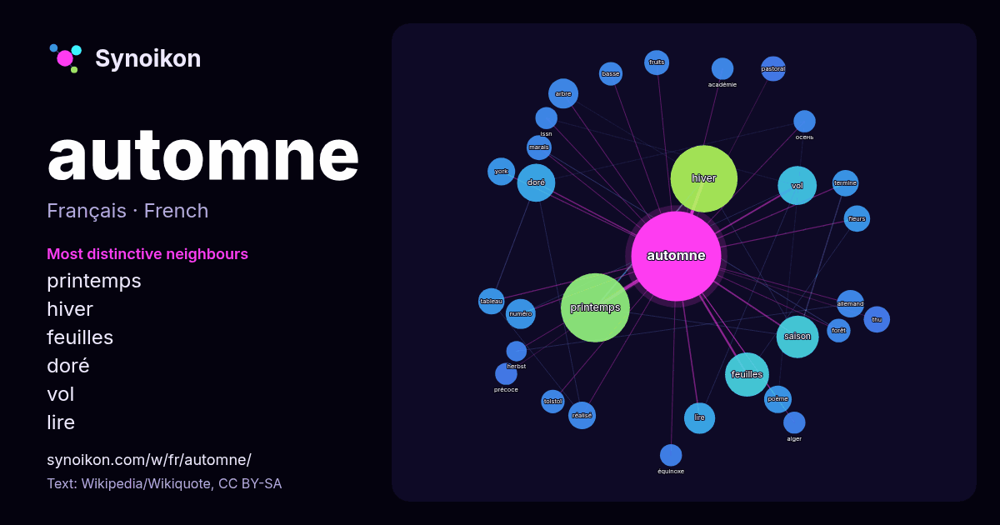

Français · liste des mots du jour
automne
“autumn” · Les mots trouvés autour de lui dans 844 occurrences issues de Wikipédia, Wikiquote.

Voisins les plus spécifiques
- printemps 59×
- hiver 58×
- feuilles 24×
- doré 21×
- vol 17×
- lire 14×
- arbre 12×
- thu 11×
- numéro 11×
- pastoral 9.9×
- poème 9.9×
- marais 9.1×
- fleurs 9.1×
- tolstoï 8.9×
- fruits 8.5×
- saison 8.3×
- tableau 8.2×
- осень 8.0×
- équinoxe 8.0×
- issn 8.0×
× = combien de fois plus souvent que dans le texte général de Wikipédia.
Voisins les plus fréquents
- printemps 69
- hiver 65
- feuilles 28
- saison 26
- vol 22
- doré 21
- fin 15
- lire 14
- arbre 13
- film 13
- numéro 13
- allemand 11
- poème 11
- réalisé 11
- york 11
- fleurs 10
- tableau 10
- termine 10
- thu 10
- éditions 9
En contexte
- Pour les articles homonymes, voir Automne (homonymie). Cet article possède un paronyme, voir Oton. L’automne est l'une des quatre saisons de l’année dans Wikipedia snippets · Automne
- deuxième mois de l'automne. Dans la Chine ancienne, on l'appelait « Zhongqiu » (milieu de l'automne) ou « Mi-Automne ». La Fête de la Mi-Automne se situe non Wikipedia snippets · Fête de la mi-automne
- Un automne à New York Pour plus de détails, voir Fiche technique et Distribution. Un automne à New York ou New York en Automne au Québec (Autumn in New Wikipedia snippets · Un automne à New York
- spécifique autumnale est la forme du génitif de autumnalis « automne » signifiant « de l’automne ». Selon POWO, le nom valide Colchicum autumnale possède Wikipedia snippets · Colchique d'automne
- Pour les articles homonymes, voir Automne (homonymie). Automne (poème) Automne (en russe : Осень) est un poème inachevé, écrit en ottava rima, en 1833 Wikipedia snippets · Automne (poème)
- Pour les articles homonymes, voir Automne (homonymie). L'Automne est une rivière française qui coule dans les départements de l'Aisne et de l'Oise en ancienne Wikipedia snippets · Automne (rivière)
- paronyme, voir Automne (homonymie). L'Automne est un titre notamment porté par : L'Automne, tableau d'Édouard Manet peint en 1882 ; L'Automne, tableau de Wikipedia snippets · L'Automne
- Précoce automne Précoce automne est un roman de Louis Bromfield, publié en 1926 aux États-Unis sous le titre Early Autumn. Il a remporté le Prix Pulitzer Wikipedia snippets · Précoce automne
Autres mots
- art
- carte
- chanson
- chat
- chemin
- cheval
- chien
- climat
- cloche
- cœur
- dieu
- désert
- eau
- famille
- forêt
- histoire
- hiver
- horloge
- jardin
- langue
- miel
- miroir
- monnaie
- montagne
- mort
- mère
- nature
- nourriture
- ombre
- pain
- pluie
- pont
- pouvoir
- printemps
- santé
- science
- sel
- silence
- temps
- tempête
- thé
- train
- travail
- trésor
- vie
- ville
- vérité
- étoile
- île
Précalculé le 2026-10-09 avec les paramètres par défaut (±5 mots, corpus moyen). La carte interactive peut l’actualiser avec des données en direct.
Interface traduite automatiquement ; corrections bienvenues.